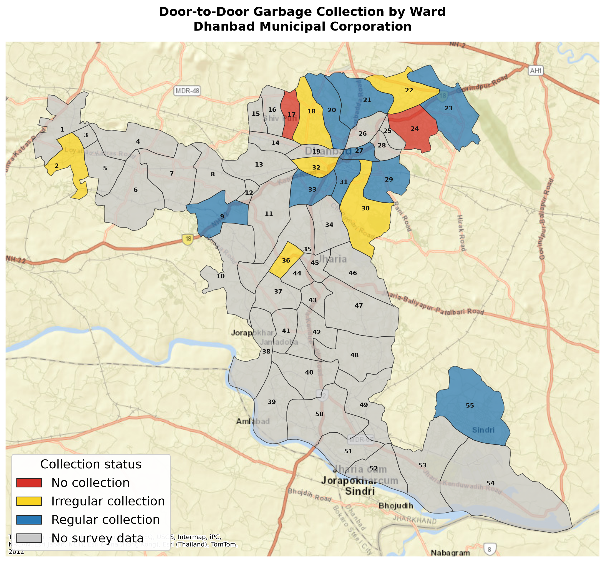

{kind=link}
No collection
Dhanbad Municipal Corporation
Door-to-door garbage collection
A ward-wise view built from crowd-sourced reports, showing where collection is regular, irregular, or absent.
- Survey snapshot updated
- Loading...
Current picture
Collection status by ward

At a glance
Report card of 55 wards
These totals describe wards with at least one response, not the full city. More responses will make the ward-level picture stronger.
Irregular collection
Regular collection
No data
Help complete the map
Is your ward missing?
Share the status of door-to-door garbage collection in your ward. Or help us correct your ward's data.
Make your voice heard
Demand the basic services for living with dignity
Find and contact your ward councillor through the Mai Hoon Dhanbad Know Your Ward tool.
How it is calculated
One final status per ward
Each row is one crowd-sourced report. For wards with multiple reports, the most frequently reported status is used. If two or more statuses receive the same number of reports, the higher status is selected.
- Responses
- --
- Wards covered
- --
Loading current survey statistics...